El Portal de procesos es el sistema de Century Mold para pedir y autorizar tiempo extra y transporte. Recursos Humanos tiene tres trabajos:
Confirmar el tiempo extra que ya tiene las dos firmas y pedir el transporte al proveedor (Por enviar al proveedor y Formato de rutas).
Cuidar a las personas del portal: el padrón de empleados, los usuarios, sus contraseñas y sus roles.
Mantener los datos base: la estructura (áreas, puestos y turnos) y los catálogos (rutas, comunidades, puntos de reunión y motivos).
Cómo camina una solicitud
Quien la pide (solicitante) la captura y la envía.
El jefe de su área (Autorización 1) la autoriza o la devuelve.
Autorización 2 da la segunda firma.
Tú la confirmas en Por enviar al proveedor: se crea su solicitud de transporte.
El Formato de rutas (Excel) se baja y se manda al proveedor.
Nóminas usa lo autorizado para armar el formato semanal de nómina.
El sistema no manda correos ni mensajes. Después de confirmar, devolver o cancelar, avisa tú a la persona o al proveedor que corresponda.
Lo que puedes hacer
Confirmar, devolver, cancelar o cerrar sin transporte lo autorizado.
Bajar el Formato de rutas, el resumen de horas extra y el Excel de la consulta.
Ver las solicitudes de transporte y toda la consulta de tiempo extra.
Firmar el nivel 2 «como RH» (menos lo que tú creaste) y capturar tiempo extra de un área que no participa (Administrativo).
Crear usuarios (uno por uno o en lote), restablecer contraseñas y dar roles: Aut. 1, Solicitante, Recursos Humanos y Nóminas.
Dar de alta, editar y dar de baja empleados; importar el padrón y cargar los elegibles de tiempo extra.
Editar la estructura y los catálogos.
Reabrir un área que Nóminas ya firmó.
Lo que NO puedes hacer
Dar el rol Autorizador 2 o Administrador: solo lo da un administrador.
Restablecer la contraseña de otro Recursos Humanos, de un administrador o la tuya; ni cambiar tu propio rol ni darte el rol de Nóminas.
Firmar lo que tú mismo creaste.
Autorizar fuera de tiempo lo que ya venció: solo Autorización 2.
Borrar solicitudes de tiempo extra: no existe ese botón.
Usar Herramientas (diagnóstico, respaldo, vista previa por rol, preparar para producción): son del administrador.
2. Primeros pasos
Entrar al portal
Abre https://centurymold-qro.web.app en tu navegador (Chrome, Edge o el de tu celular).
Escribe tu número de nómina.
Escribe tu contraseña. El ojito sirve para ver lo que escribes.
Toca Iniciar sesión.
Si no la recuerdas, toca ¿Olvidaste tu contraseña?. Solo se restablece en persona (otro Recursos Humanos, un Autorizador 2 o Sistemas, con tu identificación).
La primera vez que entras con una contraseña temporal, el portal te pide crear una contraseña nueva: mínimo 8 caracteres, con letras y números.
Tu pantalla de inicio
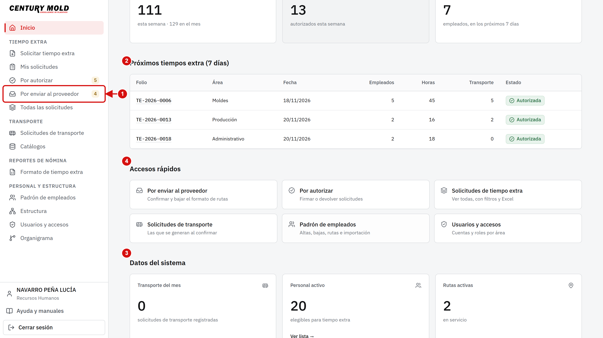
Por enviar al proveedor en el menú trae un número: cuántas solicitudes esperan tu confirmación.
Requieren atención: lo que espera algo de ti (por confirmar, fechas vencidas, por autorizar, devueltas sin corregir).
Próximos tiempos extra (7 días): lo que viene, con su estatus.
Accesos rápidos y Datos del sistema (transporte del mes, personal activo, rutas activas).
El menú
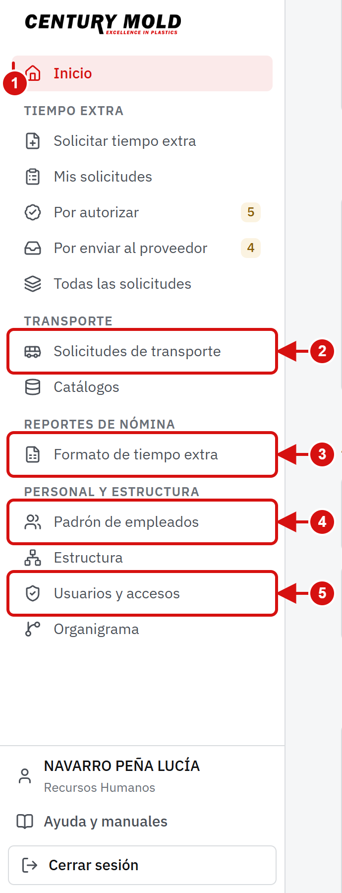
Tiempo extra: solicitar, mis solicitudes, por autorizar, por enviar al proveedor y todas las solicitudes.
Solicitudes de transporte y Catálogos.
Formato de tiempo extra (Reportes de nómina): la revisión semanal; tú solo la reabres.
Padrón de empleados y Estructura.
Usuarios y accesos y Organigrama. Abajo: Ayuda y manuales (este manual y su guía rápida en PDF) y Cerrar sesión.
En Mi cuenta (tu nombre, abajo en el menú) cambias tu contraseña, el tamaño de letra, el tema y las ayudas. Por seguridad la sesión se cierra a los 30 minutos sin usar; entra de nuevo y no se pierde lo ya hecho.
3. Por enviar al proveedor
Para qué sirve. Aquí están las solicitudes que ya tienen las dos autorizaciones y esperan que las confirmes. Al confirmar, el portal crea la solicitud de transporte y la deja lista para el Formato de rutas. Cuándo se usa: todos los días.
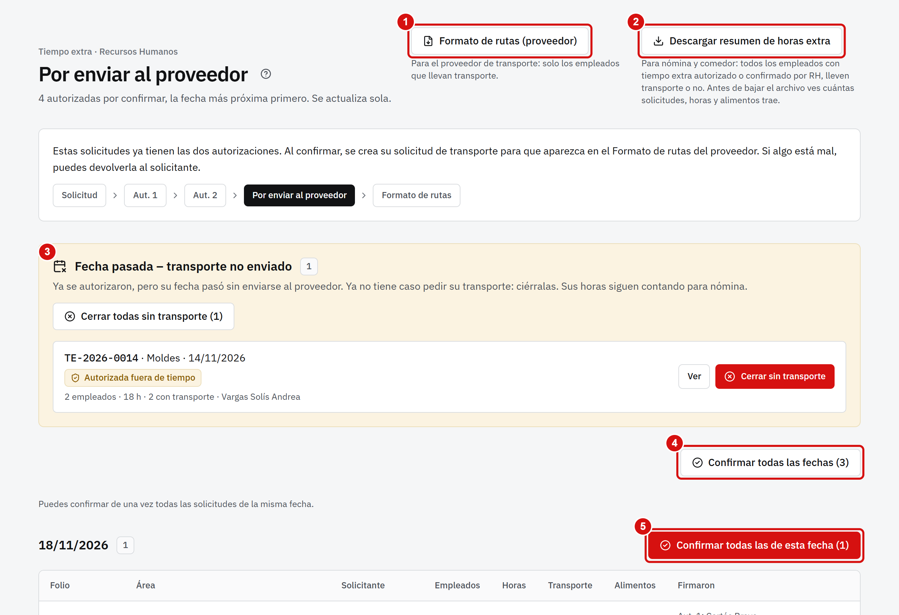
Formato de rutas (proveedor): el Excel para el proveedor (más adelante).
Descargar resumen de horas extra: para nómina y comedor, con todos los empleados con tiempo extra autorizado o confirmado, lleven transporte o no.
Fecha pasada – transporte no enviado: lo que se autorizó pero su fecha ya pasó sin confirmarse.
Confirmar todas las fechas: confirma todo lo pendiente de una vez.
Confirmar todas las de esta fecha: solo el grupo de un día. Cada día trae su tabla con folio, área, solicitante, empleados, horas, transporte, alimentos y quién firmó.
La fecha más próxima sale primero. Cada renglón tiene Revisar (o Revisar y confirmar) para abrir la solicitud. Una insignia 2 rutas significa que hay empleados en rutas distintas.
Fecha pasada: cerrar sin transporte
Si la fecha del tiempo extra ya pasó y no se mandó al proveedor, ya no tiene caso pedir su transporte. Se cierra sin transporte: pasa a «Confirmada por RH» sin crear solicitud de transporte, y sus horas siguen contando para nómina. Pasa, por ejemplo, con lo que Autorización 2 autoriza fuera de tiempo.
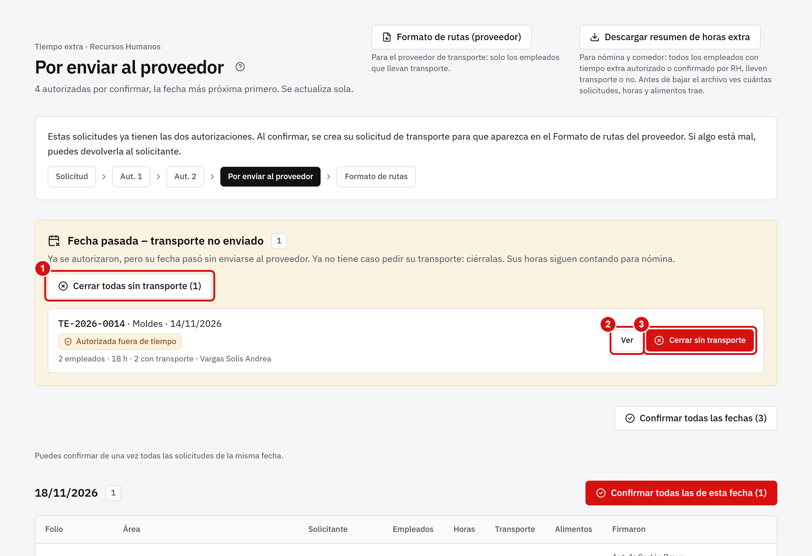
Cerrar todas sin transporte cierra todas las de esta sección.
Ver abre la solicitud para revisarla antes.
Cerrar sin transporte la cierra una por una.
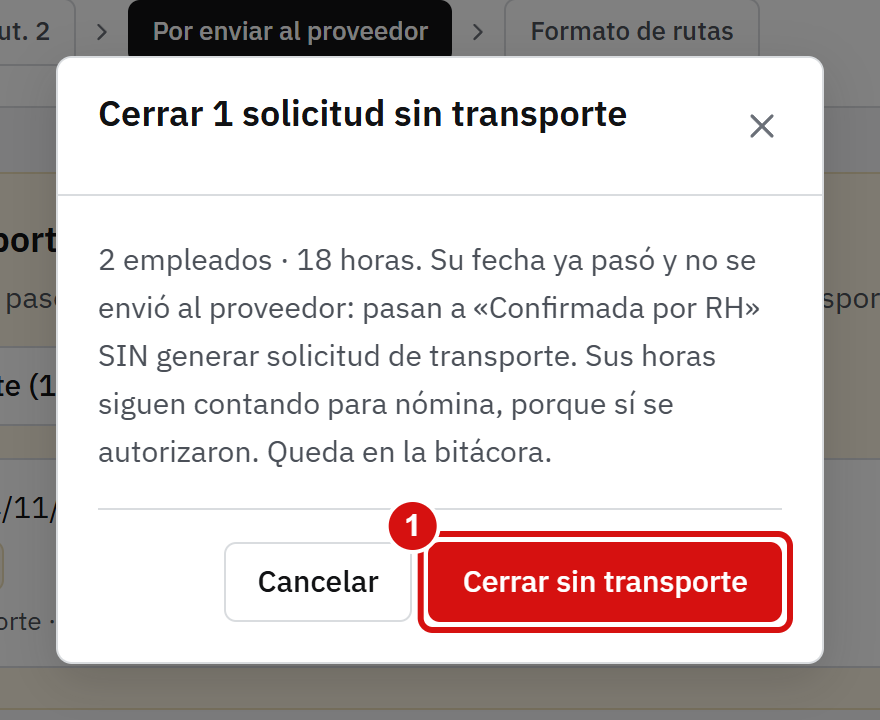
Lee el resumen (empleados y horas) y confirma con el botón. Queda en la bitácora con tu nombre.
4. Revisar, devolver o cancelar una solicitud autorizada
Para qué sirve. Antes de confirmar, abre la solicitud y verifica empleados, horarios, transporte y rutas. Si algo está mal, la devuelves o la cancelas. Cuándo se usa: cuando algo no cuadra, o para revisar las de 2 rutas.
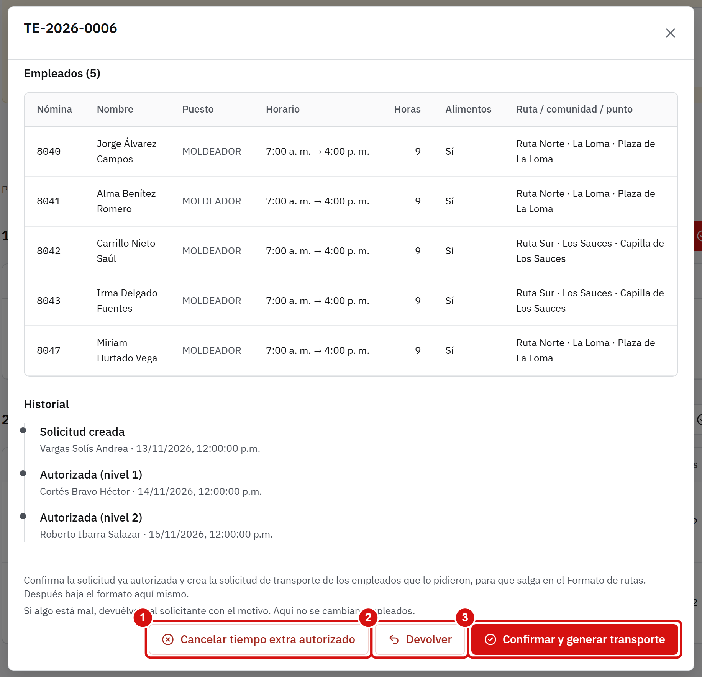
Cancelar tiempo extra autorizado: la cancela con un motivo.
Devolver: la regresa a quien la capturó para que la corrija.
Confirmar y generar transporte: la confirma.
Devolver
La solicitud regresa a quien la capturó, con tu motivo, para que la corrija y la reenvíe. Al reenviarla vuelve a empezar desde el nivel 1 (jefe de área y Autorización 2). Avísale a la persona: el portal no lo hace.
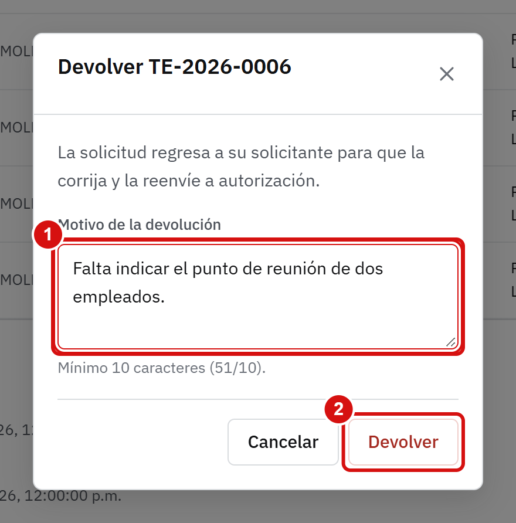
Escribe el motivo (mínimo 10 letras) y toca Devolver.
El botón está apagado mientras el motivo sea más corto.
Cancelar
Cancelar es para algo que ya no se va a hacer o se autorizó por error. Queda Cancelada, con tu nombre y tu motivo. Si el transporte ya se había enviado al proveedor, la solicitud de transporte se marca para revisión y tú le avisas al proveedor.
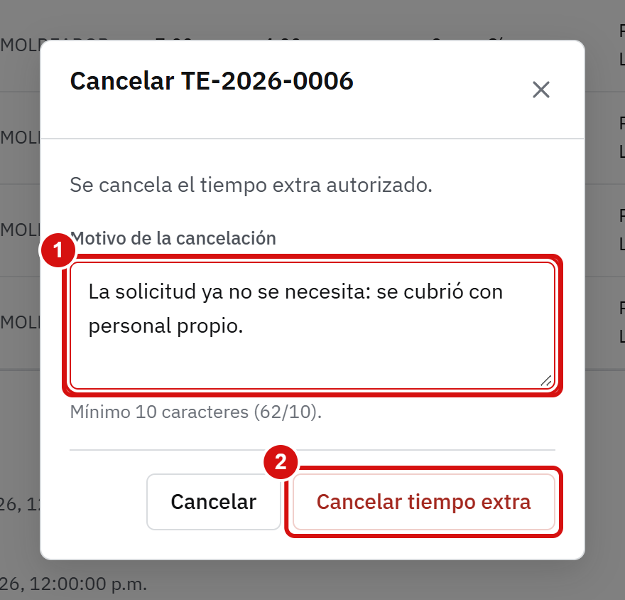
Escribe el motivo y confirma con el botón rojo.
Una solicitud cancelada ya no se puede usar. Si todavía se necesita, quien la pidió crea otra.
5. Confirmar el tiempo extra
Para qué sirve. Confirmar es el paso que crea el transporte. Sin él, el Formato de rutas sale vacío. Cuándo se usa: todos los días, de preferencia antes de mandar el Formato de rutas al proveedor.
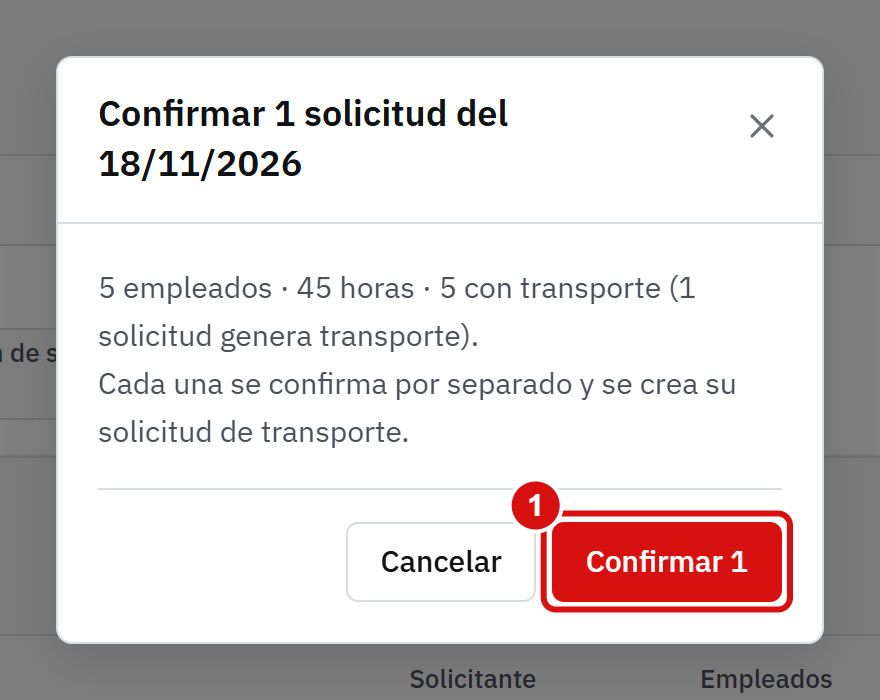
Toca Confirmar todas las de esta fecha. El portal te muestra el resumen del día (empleados, horas, transporte) y pide confirmar.
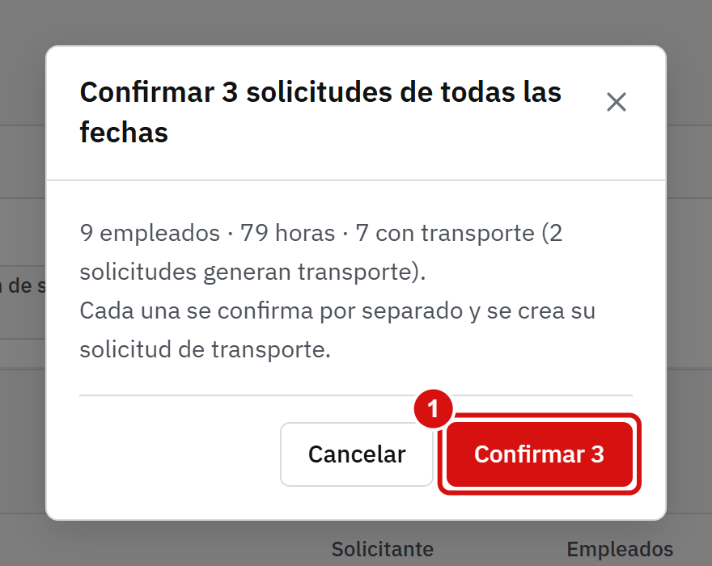
Con Confirmar todas las fechas lees el total de lo pendiente: empleados, horas, cuántos van con transporte y cuántas solicitudes generan transporte. Toca el botón para confirmar.
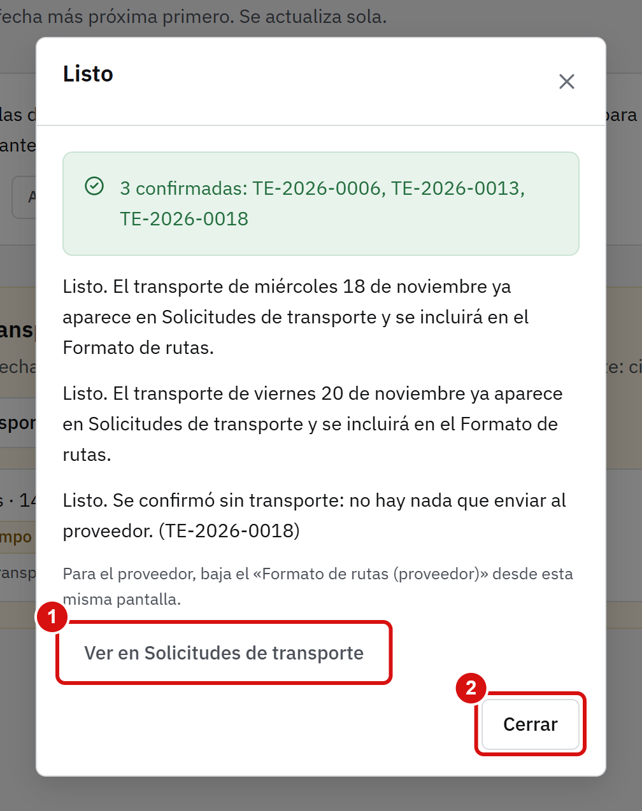
El aviso Listo dice cuántas se confirmaron y, por día, que el transporte ya aparece en Solicitudes de transporte.
Ver en Solicitudes de transporte te lleva a verlas.
Cerrar termina.
Qué pasa después
La solicitud queda Confirmada por RH, con tu nombre y la fecha.
Cada una con empleados en transporte genera su solicitud de transporte. Una sin transporte se confirma sin generar nada («no hay nada que enviar»).
Los empleados salen en el Formato de rutas del día del servicio.
Cada confirmación se cuenta una sola vez: si dos personas confirman lo mismo, la segunda recibe «Alguien más ya respondió esta solicitud».
Confirmar no avisa al proveedor. Para eso hay que bajar el Formato de rutas y mandárselo tú.
6. Formato de rutas: el Excel del proveedor
Para qué sirve. Es el Excel para el proveedor de transporte: solo lleva a los empleados que van en transporte, con su ruta, comunidad, punto de reunión, horario y teléfono. Cuándo se usa: todos los días, después de confirmar. Está en Por enviar al proveedor (botón del encabezado) y en Transporte como página propia.
Toca Formato de rutas (proveedor).
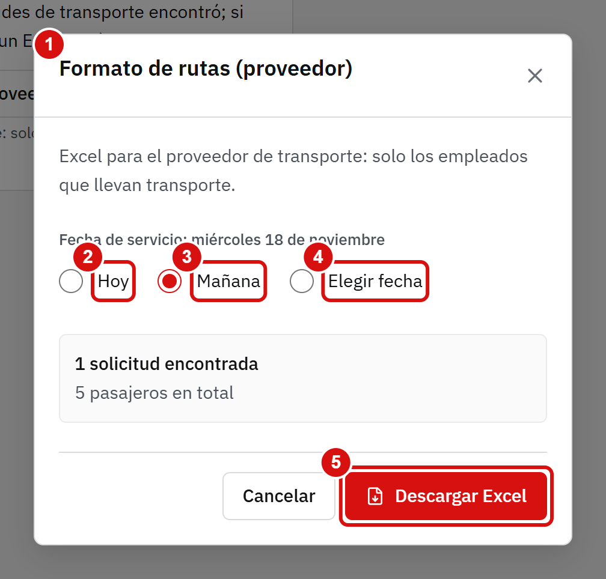
Arriba dice qué fecha de servicio vas a bajar.
Hoy.
Mañana.
Elegir fecha: una fecha o un rango.
Descargar Excel. Antes de bajar, ves cuántas solicitudes y pasajeros encontró.
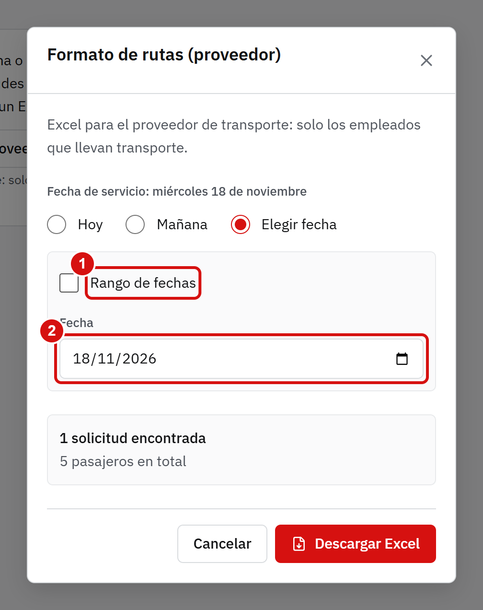
Rango de fechas: marca la casilla y elige desde y hasta.
Para una sola fecha, escríbela aquí.
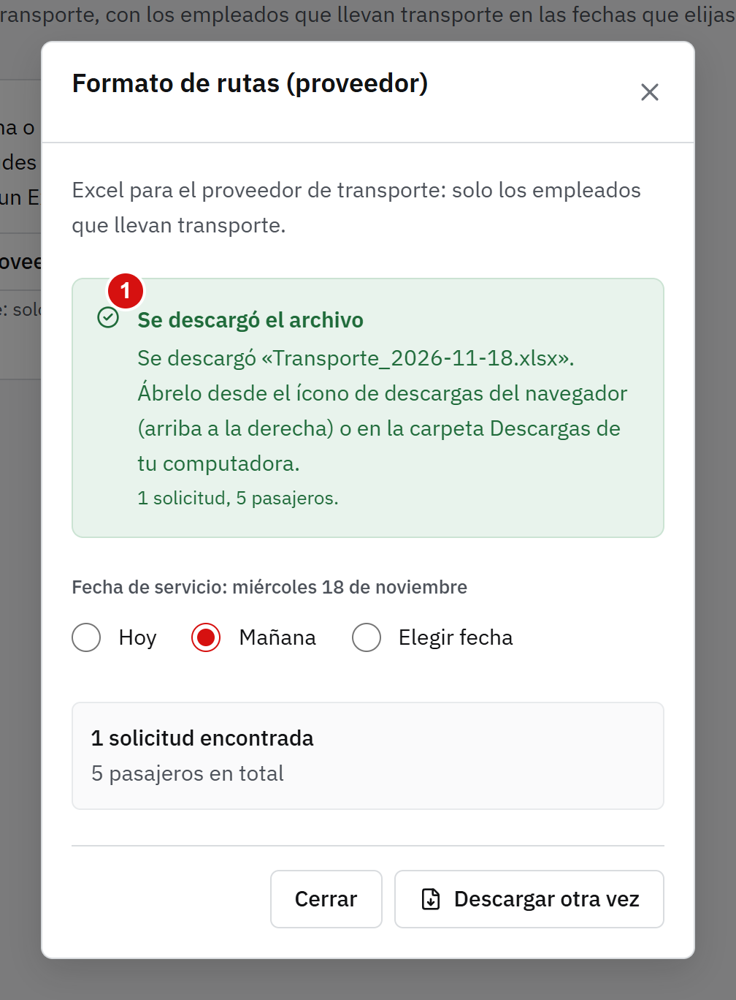
Al terminar, el aviso dice el nombre del archivo (por ejemplo Transporte_2026-11-18.xlsx), cuántas solicitudes y cuántos pasajeros lleva. Ábrelo desde el ícono de descargas del navegador o en la carpeta Descargas.
Si sale vacío
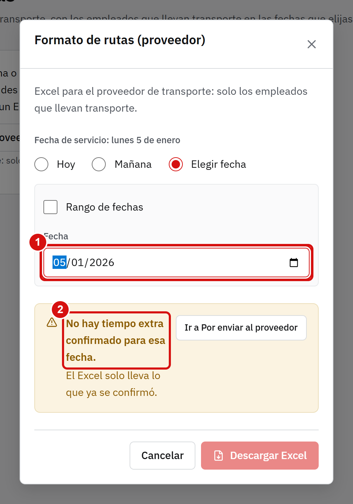
Si no hay nada confirmado para esa fecha, el portal lo dice y no baja un Excel vacío.
El botón Ir a Por enviar al proveedor te lleva a confirmar.
Revisa que elegiste la fecha correcta.
Revisa que el tiempo extra esté confirmado (Por enviar al proveedor).
Revisa que haya empleados con transporte: el Excel solo lleva a esos.
Las salidas que cruzan la medianoche (por ejemplo, de 4:00 p. m. a 12:00 a. m.) llevan el viaje de regreso el día siguiente. Si el proveedor reclama a alguien que «no estaba», revisa también el Formato de rutas del día siguiente.
La aplicación no avisa al proveedor: el archivo lo mandas tú. El mismo Excel puede bajarlo Nóminas cuando tú no estés.
7. Solicitudes de transporte
Para qué sirve. Ver las solicitudes de transporte que nacieron al confirmar el tiempo extra, por fecha de servicio. Cuándo se usa: para comprobar que algo quedó confirmado y con qué pasajeros.
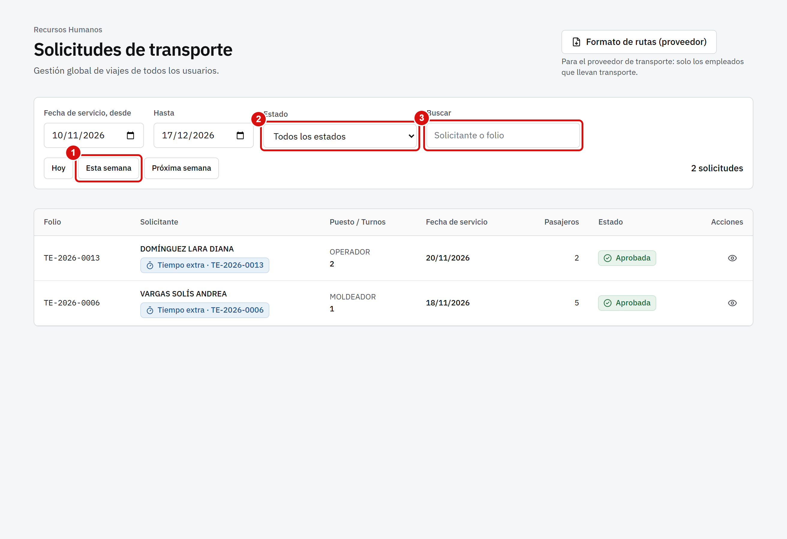
Hoy, Esta semana y Próxima semana llenan las fechas; también puedes elegir Fecha de servicio, desde y Hasta.
Estado: Pendientes, Aprobadas, Rechazadas o Canceladas.
Buscar por solicitante o folio.
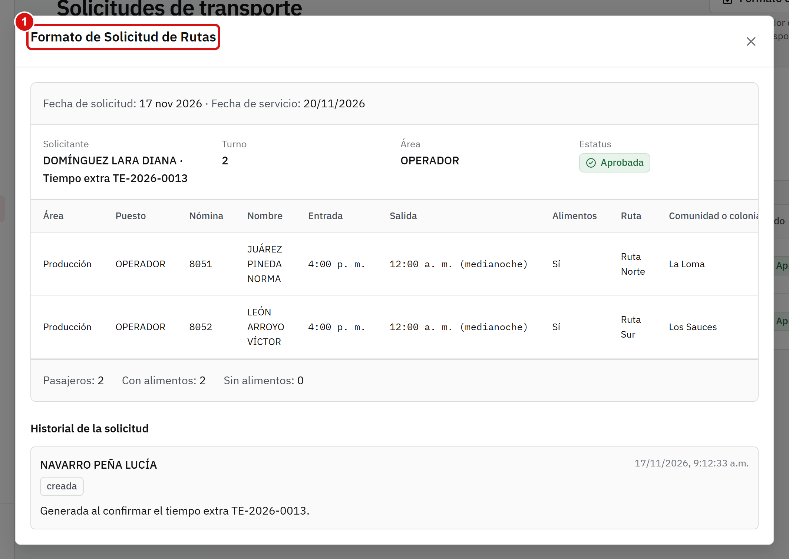
El ojo abre el Formato de Solicitud de Rutas: la fecha de solicitud y de servicio, los pasajeros con su puesto, nómina, entrada, salida, alimentos, ruta y comunidad, y su historial («Generada al confirmar el tiempo extra TE-…»).
Las solicitudes de transporte de tiempo extra nacen Aprobadas al confirmar; aquí las consultas y desde aquí también puedes llegar al Formato de rutas. Nóminas las ve y las descarga, pero no las cambia.
8. Firmar como RH y capturar tiempo extra
Además de confirmar, RH también firma el nivel 2 («como RH») y puede capturar tiempo extra de las áreas que no participan en tiempo extra (Administrativo). Es una función poco usada.
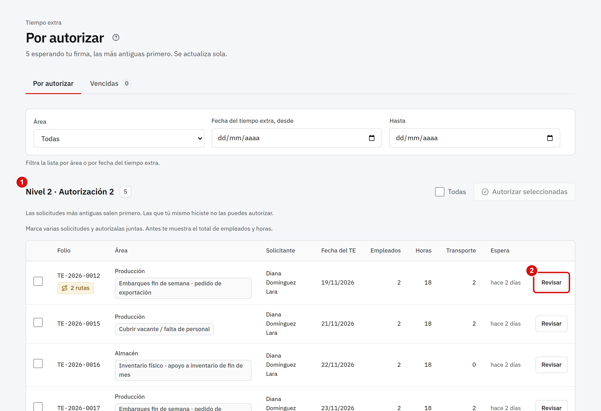
En Por autorizar ves las solicitudes que esperan el nivel 2. No te sale lo que tú creaste.
Revisar abre la solicitud.
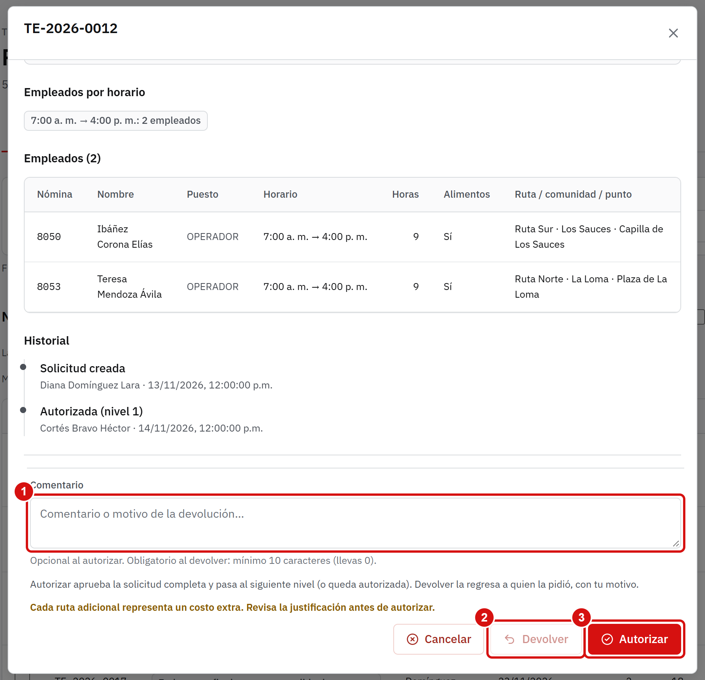
Escribe un comentario (opcional al autorizar; obligatorio al devolver, mínimo 10 letras).
Devolver o Autorizar. Tu firma queda marcada «como RH».
Capturar tiempo extra
Cómo se arma la solicitud (fecha, motivos, empleados, horarios, transporte, comentario y envío) es igual que en el manual del Solicitante; revísalo en Ayuda y manuales. Aquí solo lo que cambia para RH:
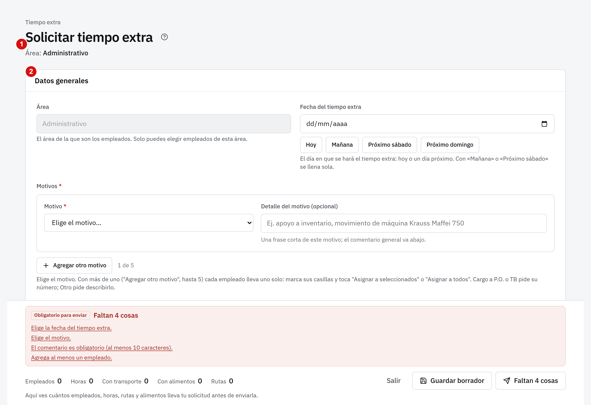
El área sale como Administrativo (no participa en tiempo extra).
Al enviar, no se autoriza sola: queda en el nivel 2 y la firma un Autorizador 2 u otra persona de RH.
Lo que NO puedes hacer
RH no captura en las áreas que sí participan (Producción, Almacén, Calidad, Mantenimiento, Moldes): eso lo hace su solicitante.
Nadie firma lo que él mismo creó.
9. Todas las solicitudes (consulta)
Para qué sirve. Ver toda la planta en una sola pantalla y cancelar lo que haga falta. Cuándo se usa: para saber en qué nivel va una solicitud, quién firmó o armar un reporte.
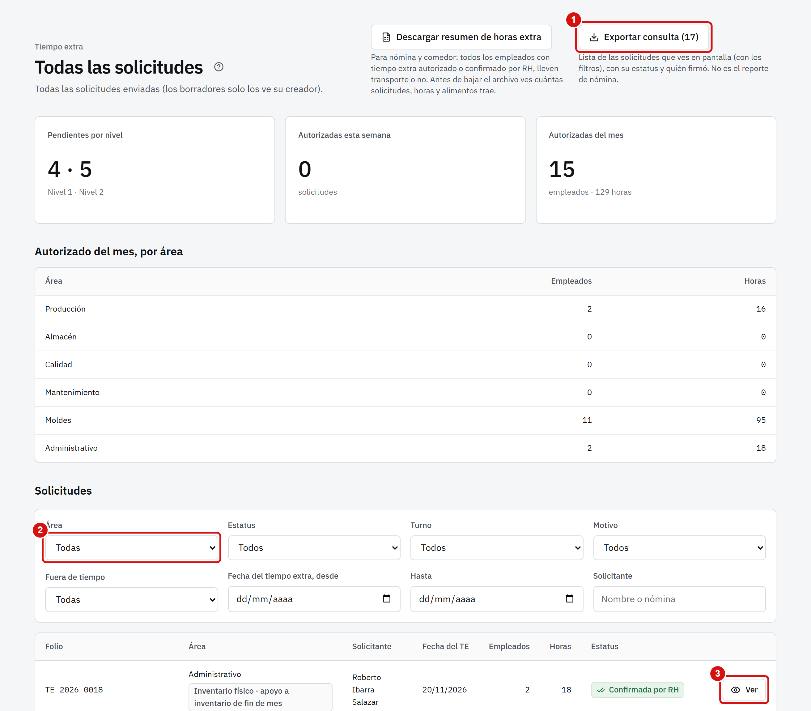
Exportar consulta (n) baja a Excel lo que ves, con los filtros puestos (lista con estatus y quién firmó; no es el reporte de nómina).
Los filtros: área, estatus, turno, motivo, fuera de tiempo, fechas, solicitante, nómina o folio.
Ver abre el detalle.
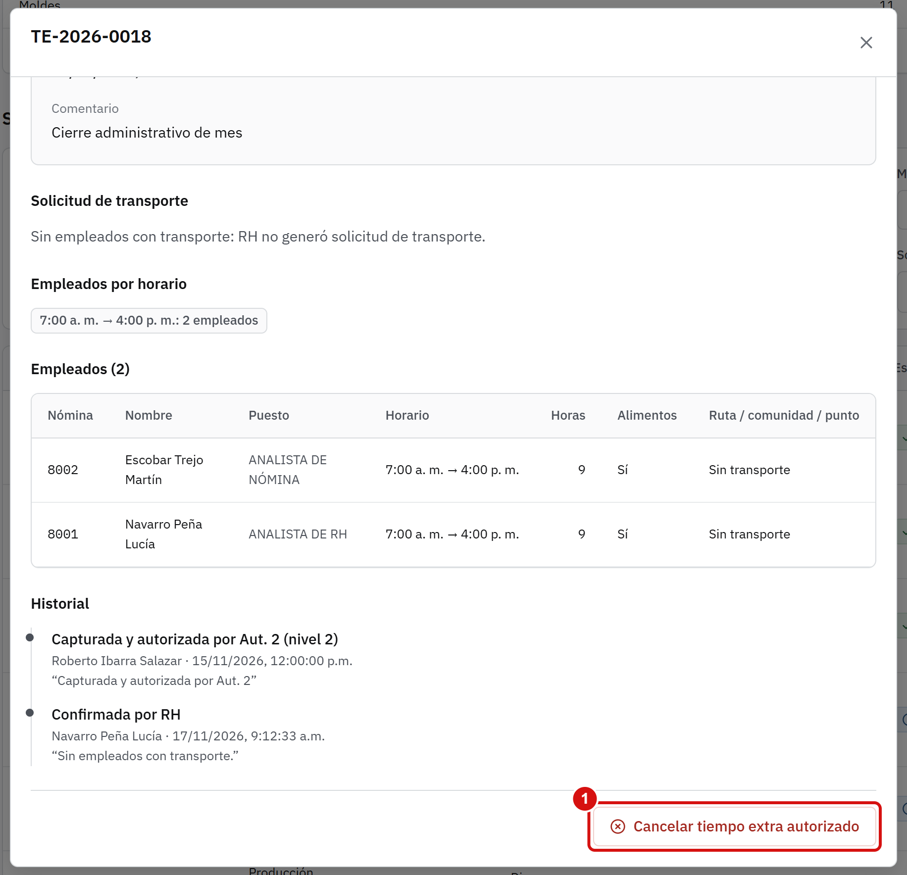
En el detalle, RH tiene Cancelar tiempo extra autorizado (con motivo). El historial muestra toda la vida de la solicitud.
Descargar resumen de horas extra (arriba de la consulta y en Por enviar al proveedor) baja el Excel de todos los empleados con tiempo extra autorizado o confirmado, para nómina y comedor.
10. Usuarios y accesos: crear y administrar usuarios
Para qué sirve. Cada persona entra con su número de nómina y una contraseña. Aquí das de alta a las personas, les cambias el rol y restableces su contraseña. Cuándo se usa: de vez en cuando: cuando entra alguien, cambia de puesto u olvida su contraseña. Se entra por Usuarios y accesos en el menú.
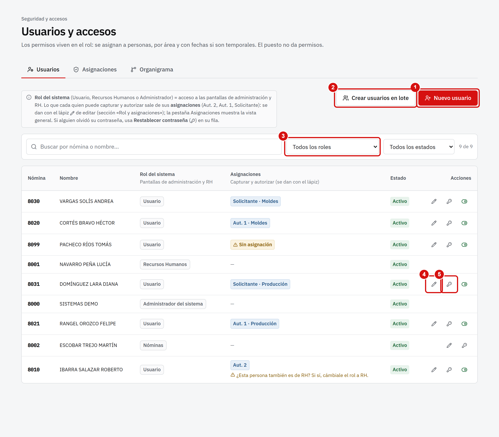
Nuevo usuario: crea uno.
Crear usuarios en lote: varios a la vez.
Filtro de rol (y de estado) y buscador por nómina o nombre.
El lápiz ✎ edita nombre, rol del sistema y asignaciones.
La llave 🔑 restablece la contraseña. El ojo activa o desactiva.
La tabla trae dos columnas distintas, y conviene no confundirlas:
Rol del sistema: Usuario, Recursos Humanos, Nóminas o Administrador. Abre pantallas de administración, de RH o de Nóminas.
Asignaciones: Autorización 2, Autorización 1 o Solicitante, por área y con fechas. Eso es lo que permite capturar y autorizar.
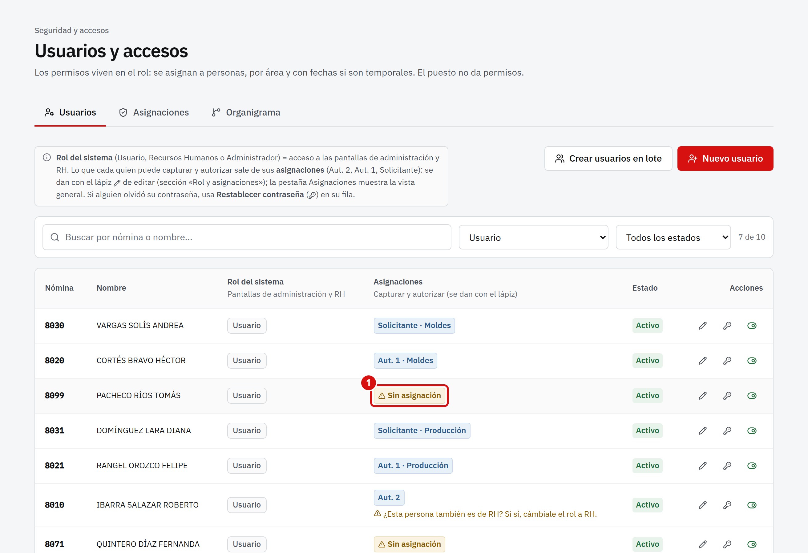
Quien está activo pero no tiene asignación aparece con la etiqueta Sin asignación: por ahora solo ve su Inicio y su cuenta. Es normal en un usuario recién creado.
Crear un usuario
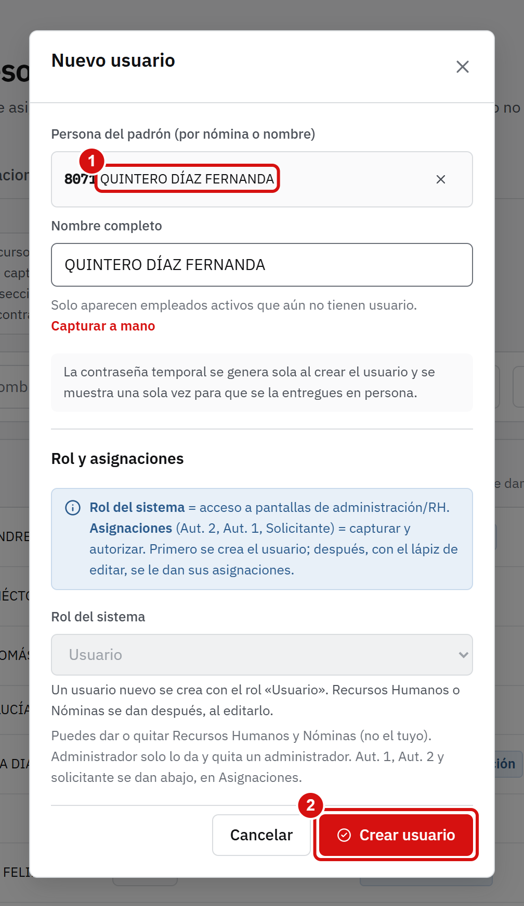
Busca a la persona por nómina o nombre. Solo salen empleados activos que aún no tienen usuario.
Toca Crear usuario. Siempre se crea con el rol «Usuario»; RH o Nóminas se dan después, con el lápiz.
Si la persona no está en el padrón, usa Capturar a mano (nómina y nombre) y dala de alta después en el padrón.
La contraseña temporal
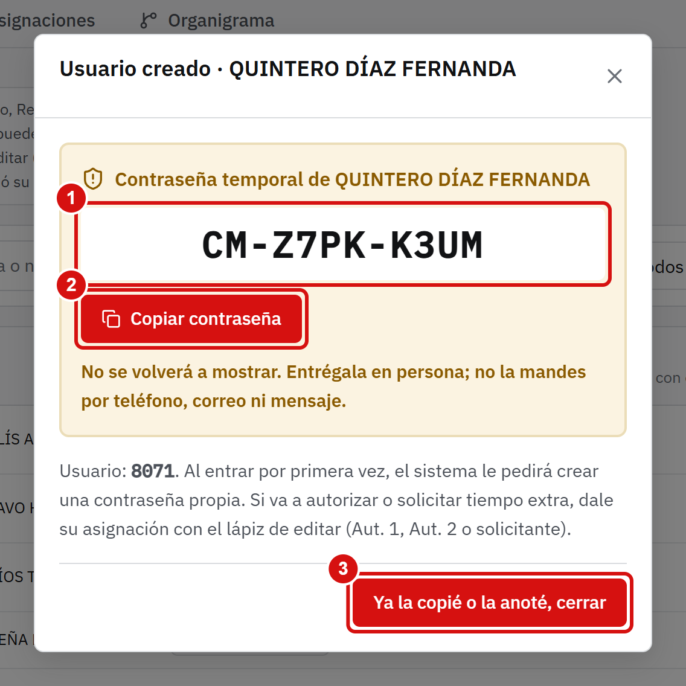
Esta es la contraseña temporal. Se ve una sola vez.
Copiar contraseña, o anótala.
Cuando ya la copiaste o la anotaste, toca Ya la copié o la anoté, cerrar.
Entrégala en persona, nunca por teléfono, correo ni mensaje. Al entrar por primera vez, la persona debe crear una contraseña propia. Si cierras sin copiarla, no se puede volver a ver: restablece la contraseña.
Crear varios en lote
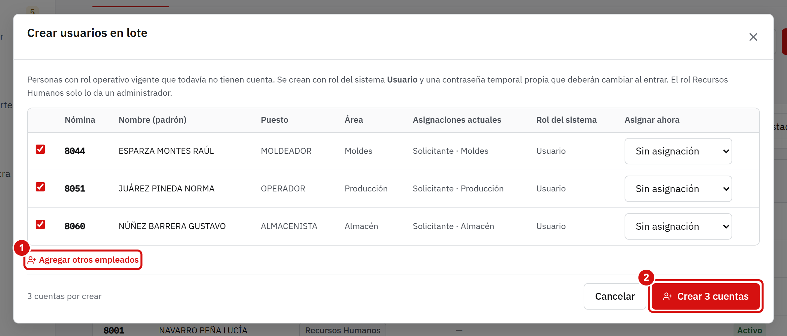
La lista trae a quienes tienen una asignación vigente pero todavía no tienen usuario. Marca a quienes quieres.
Agregar otros empleados busca a alguien más en el padrón.
Crear n cuentas.
Al terminar, el portal baja un Excel con los accesos (nómina, nombre y contraseña temporal). Esas contraseñas solo existen mientras la ventana está abierta: no la cierres antes de bajar el archivo; si lo haces, el portal pregunta «¿Ya descargaste el archivo?». Guarda el Excel en un lugar seguro, entrega cada contraseña en persona y borra el archivo al terminar.
11. Roles, asignaciones y contraseñas
Editar un usuario y dar un rol
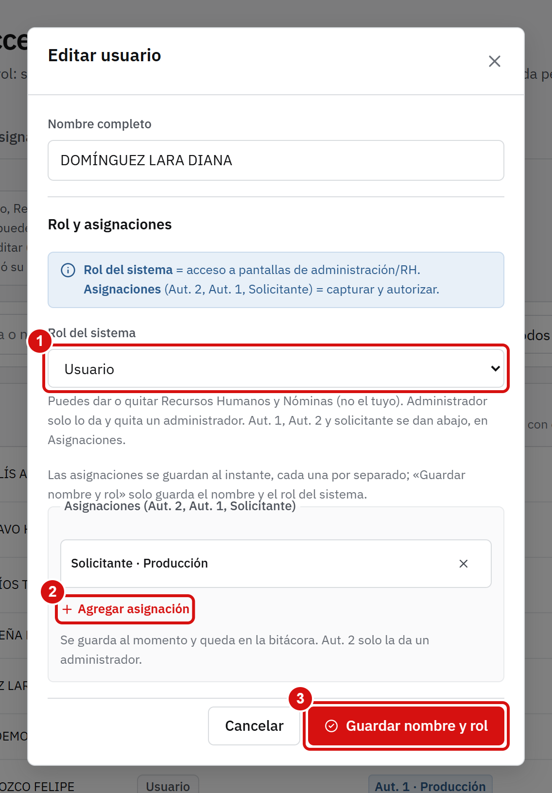
Rol del sistema: Usuario, Recursos Humanos o Nóminas.
Agregar asignación: Autorización 1 o Solicitante, con su área y fechas.
Guardar nombre y rol solo guarda el nombre y el rol del sistema. Las asignaciones se guardan al instante, cada una por separado, y quedan en la bitácora.
En Desde y Hasta pones la vigencia (vacío en «Hasta» = permanente). Úsala para suplencias. Autorización 2 no aparece en la lista: solo la da un administrador.
Dar o quitar Recursos Humanos o Nóminas
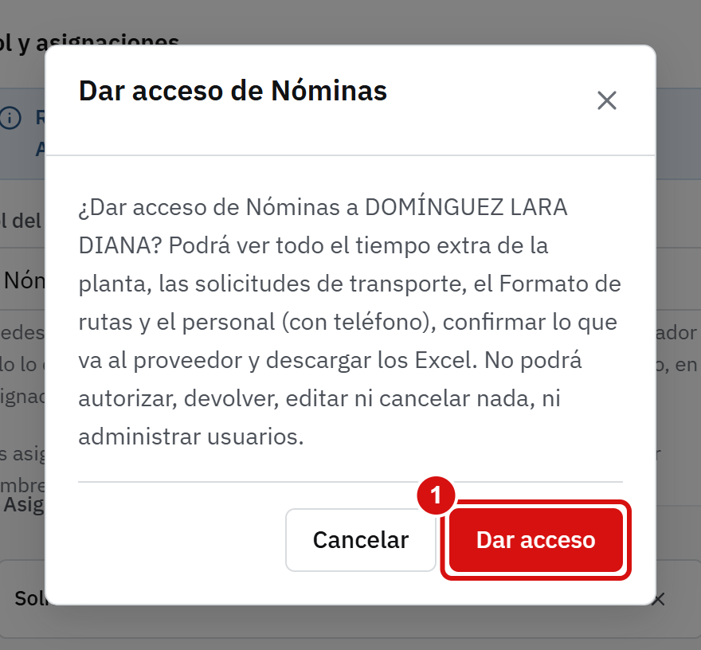
El portal pide confirmación y te dice qué podrá hacer la persona. Toca Dar acceso. Queda en la bitácora con tu nombre.
Lo que NO puedes hacer
Cambiar tu propio rol, o darte a ti mismo el rol de Nóminas.
Cambiar el nombre o el estado de alguien que ya es RH o Nóminas: solo su rol.
Dar o quitar Administrador o Autorización 2: solo un administrador.
Una cuenta con rol «Usuario» y solo una asignación de Autorización 2 no ve nada de RH. Si esa persona también es de Recursos Humanos, cámbiale el rol del sistema.
Restablecer una contraseña
Antes de restablecer, verifica a la persona en persona, con su identificación. Nunca restablezcas por teléfono, correo o mensaje.
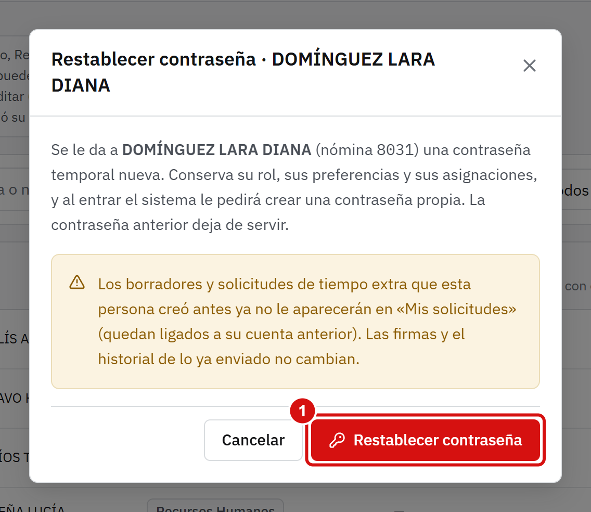
La llave 🔑 abre el aviso. Restablecer contraseña genera otra temporal, que se ve una sola vez, igual que al crear un usuario.
La persona conserva su rol y sus asignaciones; los borradores y solicitudes que creó con su cuenta anterior pueden dejar de aparecerle en «Mis solicitudes» (las firmas y el historial de lo enviado no cambian). Tú restableces contraseñas de usuarios y de Nóminas, nunca de otro RH ni de un administrador.
Desactivar a alguien
El ojo desactiva a la persona: ya no puede entrar, pero conserva su historial. El mismo botón la vuelve a activar. Desactiva a quien deja la empresa.
12. Asignaciones y organigrama
Asignaciones es la vista general: quién tiene qué permiso, en qué área y hasta cuándo, con filtros de rol, área y estado (Vigentes, Programadas, Vencidas, Revocadas). Sirve para dar un permiso sin buscar a la persona.
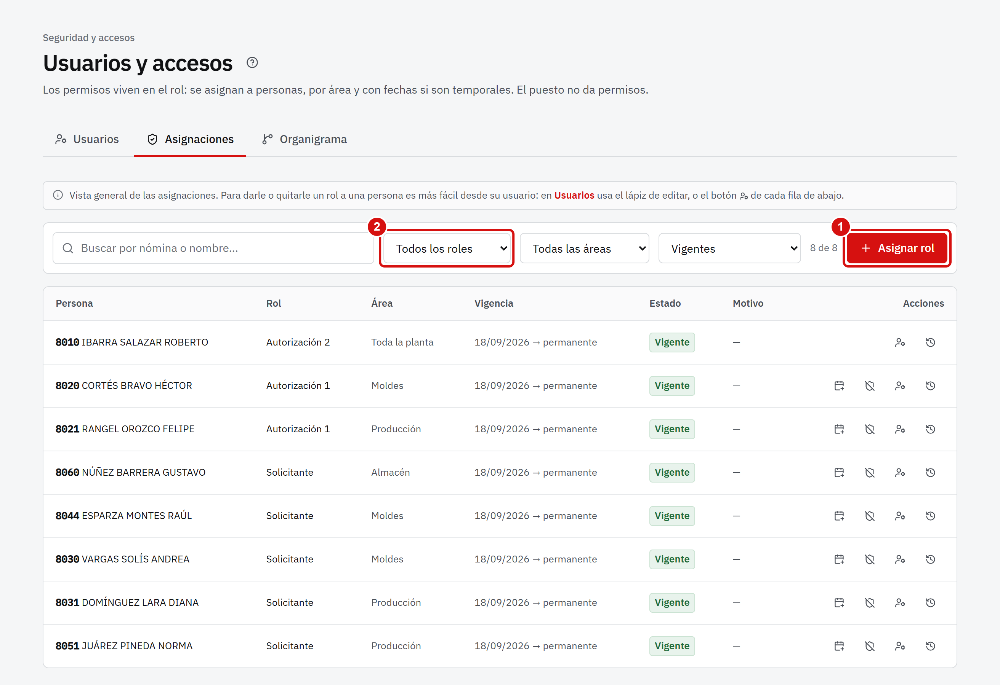
Asignar rol: Autorización 1 o Solicitante, área, empleado, fechas y motivo.
Filtros de rol, área y estado.
En cada renglón puedes extender la vigencia (si la suplencia se alarga) o revocar el permiso. Una asignación vencida o revocada ya no da permisos.
Organigrama
Muestra quién autoriza y quién captura en cada área, y detecta las áreas sin Autorización 1 (sus solicitudes no pueden avanzar). Al tocar a una persona ves sus asignaciones y su historial.
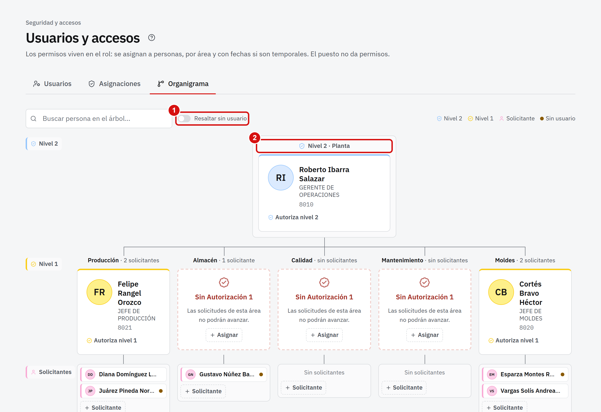
Resaltar sin usuario marca a quien está en el padrón pero no tiene usuario.
Nivel 2 · Planta: quién firma en el nivel 2. Debajo, cada área con su Autorización 1 y sus solicitantes.
13. Padrón de empleados
Para qué sirve. Es la lista de todos los empleados: de ahí salen los nombres para capturar tiempo extra, para crear usuarios y para el transporte. Cuándo se usa: cuando entra, cambia o sale alguien.
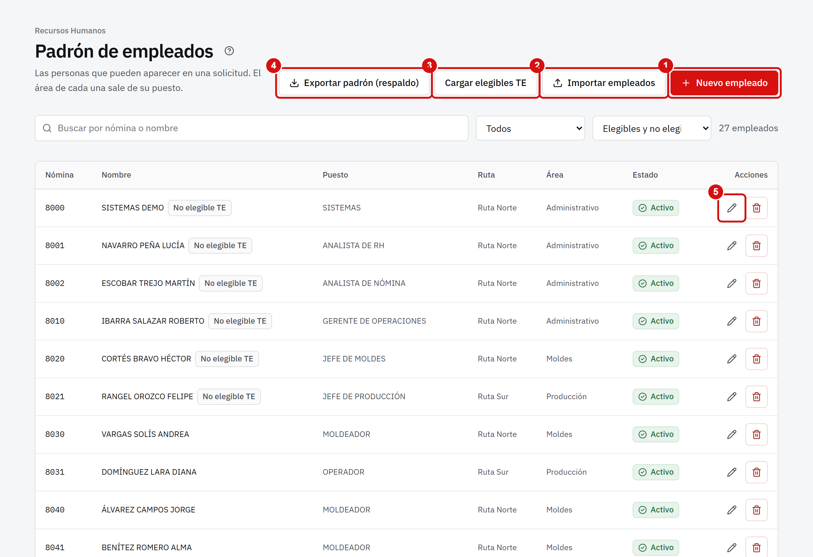
Nuevo empleado.
Importar empleados: desde un Excel.
Cargar elegibles TE: actualiza quién puede tener tiempo extra.
Exportar padrón (respaldo): baja un Excel del padrón.
El lápiz edita; el bote de basura da de baja.
Los filtros dejan ver solo activos o inactivos, y solo elegibles o no elegibles. Quien no es elegible lleva la insignia No elegible TE: sigue en el padrón, pero no sale en las listas para capturar tiempo extra (así están los supervisores, jefes y administrativos).
Dar de alta a un empleado
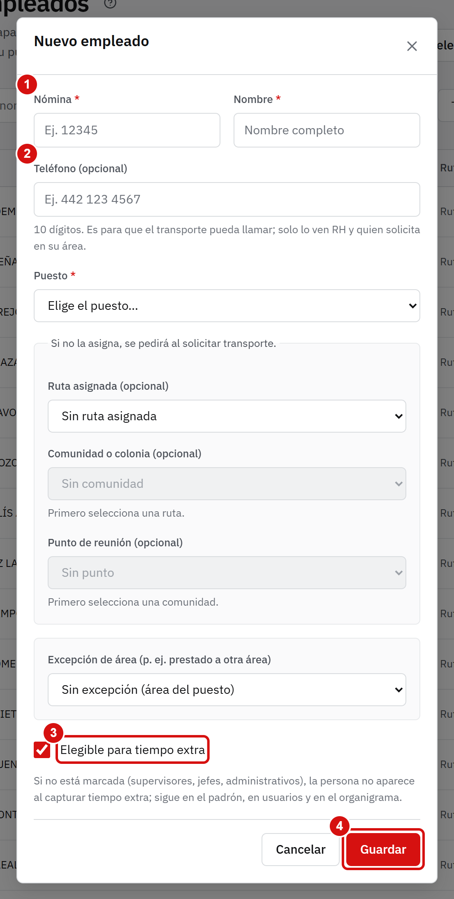
Nómina y Nombre (obligatorios).
Teléfono (opcional, 10 dígitos): es para que el transporte pueda llamar; solo lo ve RH y Nóminas. Sale en el Formato de rutas.
Elegible para tiempo extra: si no está marcada, la persona no aparece al capturar.
Guardar. Antes elige el Puesto (obligatorio; el área sale del puesto) y, si va en transporte, su ruta, comunidad y punto de reunión.
Editar a un empleado
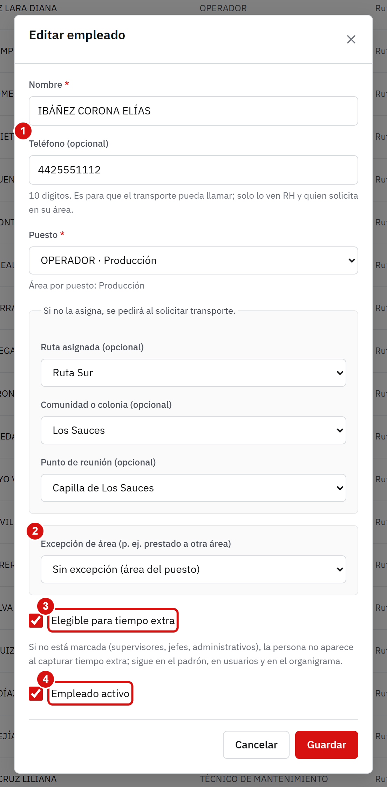
Cambia el teléfono, el puesto o su ruta, comunidad y punto.
Excepción de área: para alguien prestado a otra área (lleva un motivo).
Elegible para tiempo extra.
Empleado activo: desmárcala para dejarlo inactivo.
Dar de baja
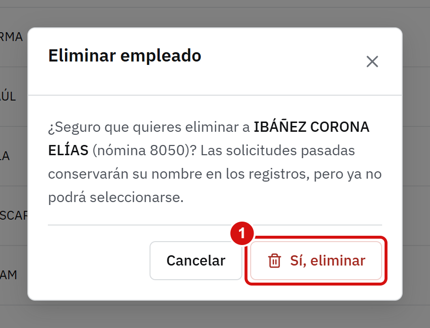
El bote de basura pide confirmación. La baja no borra su historial: las solicitudes pasadas conservan su nombre, pero ya no se le puede seleccionar. Se puede reactivar con el lápiz.
Importar empleados desde Excel
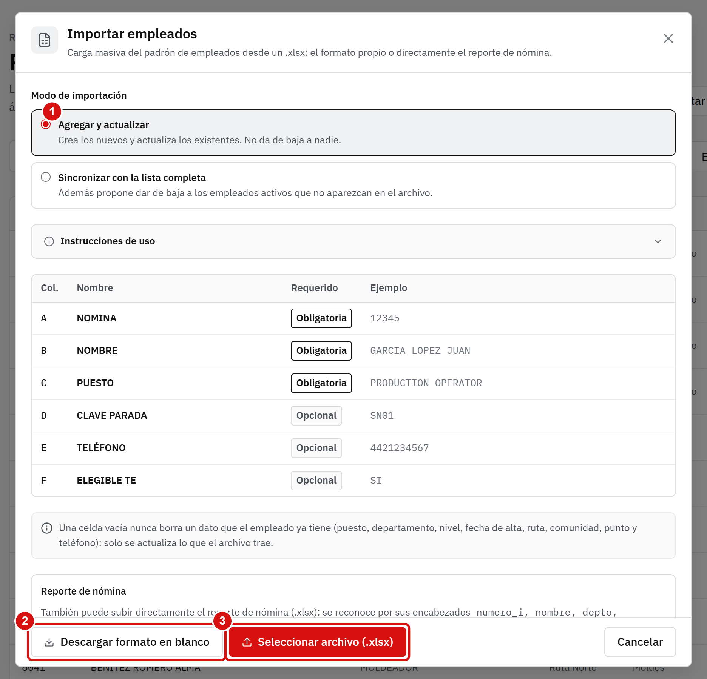
Elige el modo: Agregar y actualizar (crea los nuevos y actualiza los existentes; no da de baja a nadie) o Sincronizar con la lista completa (además propone dar de baja a quien no venga en el archivo).
Descargar formato en blanco trae el archivo de ejemplo. Columnas: NOMINA, NOMBRE y PUESTO (obligatorias); CLAVE PARADA, TELÉFONO y ELEGIBLE TE (opcionales). También acepta el reporte de nómina.
Seleccionar archivo (.xlsx). Antes de guardar, ves una vista previa: nuevos, sin cambios, con cambios, reactivados y bajas.
Una celda vacía nunca borra un dato que el empleado ya tiene. Las bajas son siempre lógicas: nada se borra.
Cargar elegibles TE
Actualiza de una sola vez quién es elegible para tiempo extra. No se guarda nada hasta que pulses Aplicar.
Elegir archivo (.xlsx) con las columnas NOMINA, NOMBRE, PUESTO, DEPTO NOMINA, AREA TE y ELEGIBLE TE.
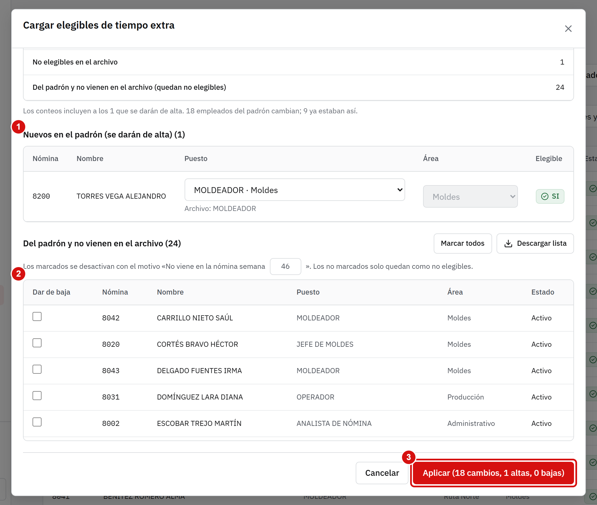
Nuevos en el padrón: las nóminas del archivo que no están; se darán de alta (con puesto y área editables).
Del padrón y no vienen en el archivo: marca Dar de baja en quien ya no está; solo los marcados se desactivan, el resto queda no elegible. Marcar todos y Descargar lista ayudan.
Aplicar (n cambios, a altas, b bajas): escribe todo, con un resumen en la bitácora.
Antes de cargar elegibles, baja el Exportar padrón (respaldo). Revisa bien la lista de bajas: marcar de más desactiva a personas que sí trabajan.
14. Estructura: áreas, puestos y turnos
Para qué sirve. La estructura es la base de todo: cada empleado tiene un puesto, cada puesto pertenece a un área, y de ahí salen los permisos por área y el organigrama. Cuándo se usa: casi nunca; cuando se crea un puesto o cambia un turno.
Áreas
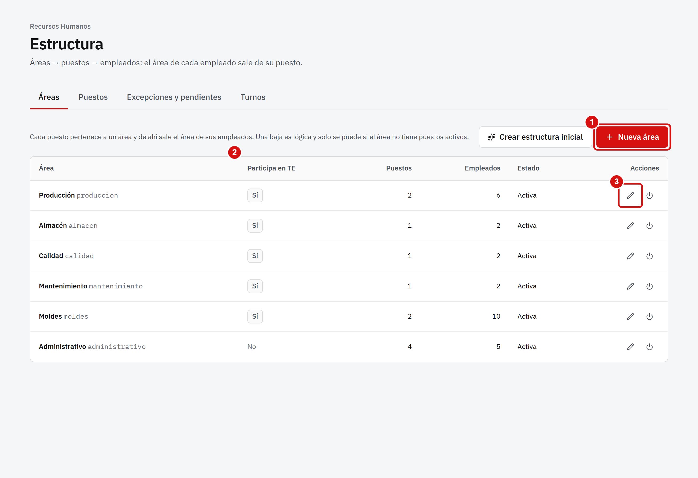
Nueva área.
Participa en TE: si es «No», nadie captura tiempo extra en esa área (como Administrativo).
Editar o dar de baja un área.
Puestos
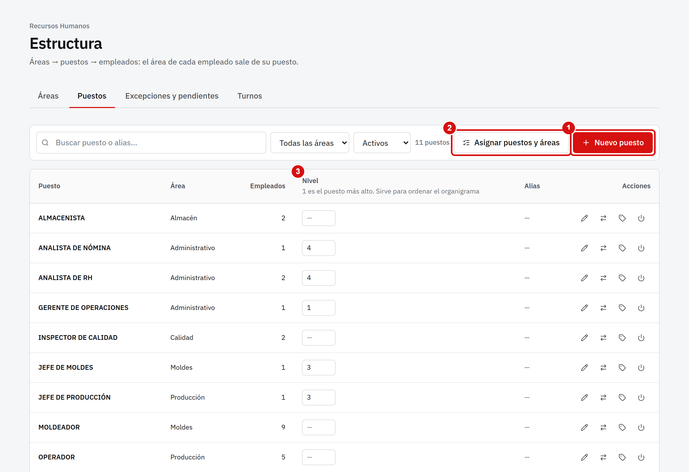
Nuevo puesto.
Asignar puestos y áreas: arregla en lote a quien tenga puesto o área pendiente.
Nivel: 1 es el puesto más alto; sirve para ordenar el organigrama.
Cada renglón también te deja editar el nombre, cambiar de área, ver o quitar alias (otros nombres con que llega el puesto en los archivos) y dar de baja.
Excepciones y pendientes
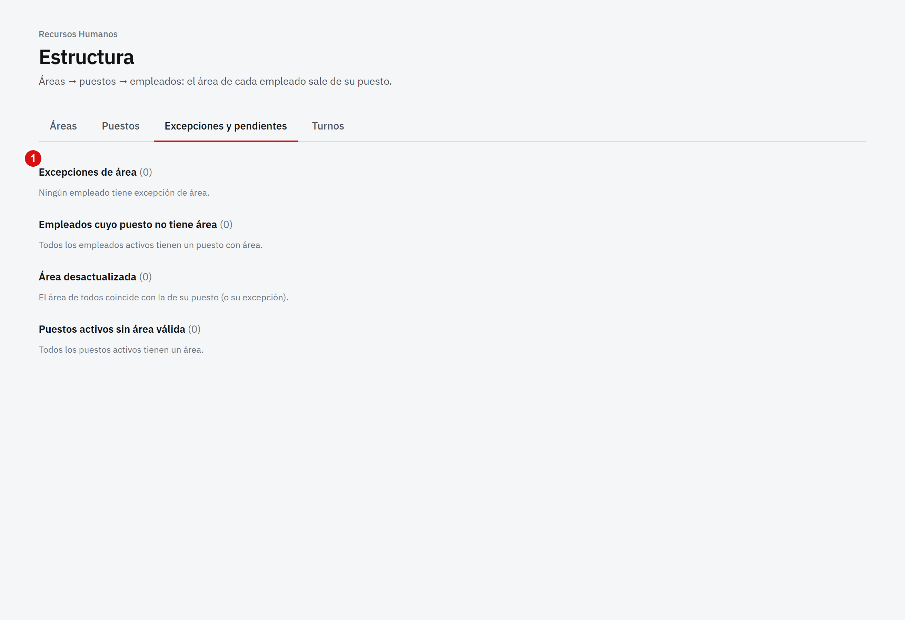
Lista lo que hay que arreglar: empleados con excepción de área, empleados cuyo puesto no tiene área, área desactualizada y puestos activos sin área válida. Si todo está en cero, no hay nada pendiente.
Turnos
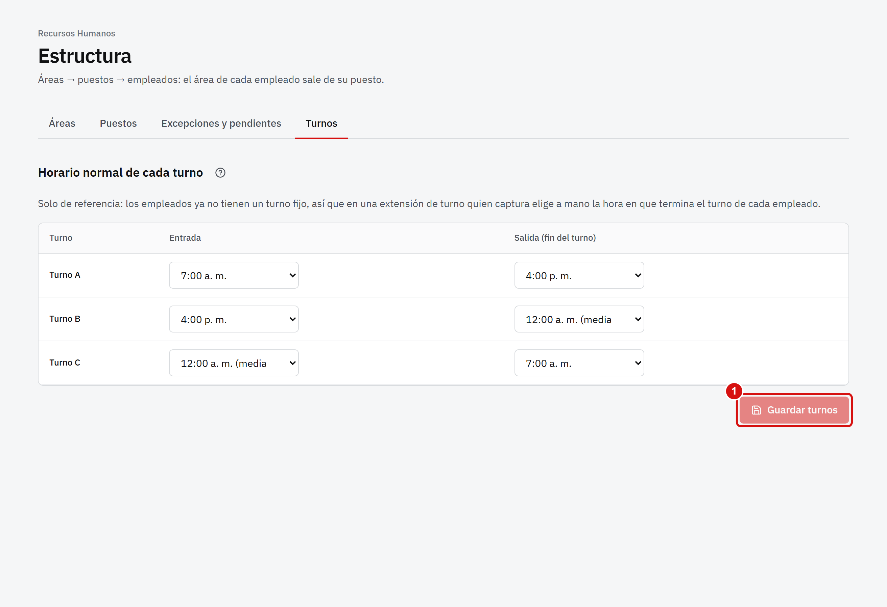
El horario normal de cada turno (A, B y C): entrada y salida. Sirve para proponer el horario al capturar y para ordenar el formato de nómina. Guardar turnos aplica los cambios.
Lo que NO puedes hacer
El botón Crear estructura inicial es del administrador; no lo uses.
15. Catálogos: rutas, comunidades, puntos y motivos
Para qué sirve. Son las listas que se eligen al capturar tiempo extra y transporte. Cuándo se usa: cuando cambia una ruta, una colonia o un punto de reunión, o se agrega un motivo.
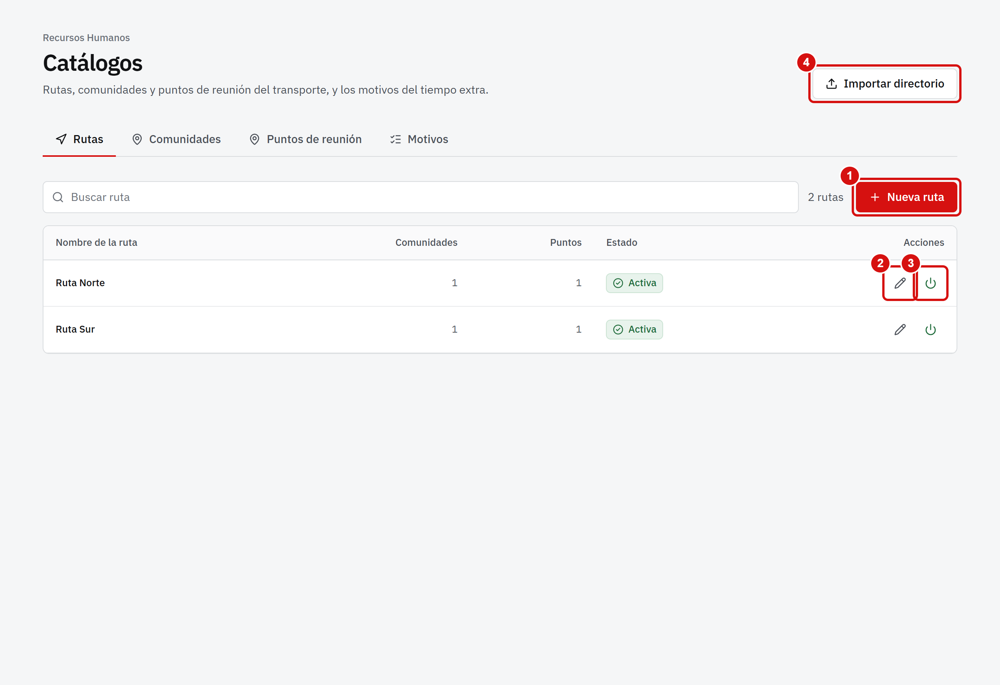
Importar directorio: carga rutas, comunidades y puntos desde un Excel.
Nueva ruta.
Editar una ruta.
Desactivar una ruta (ya no se ofrece; lo ya capturado no cambia).
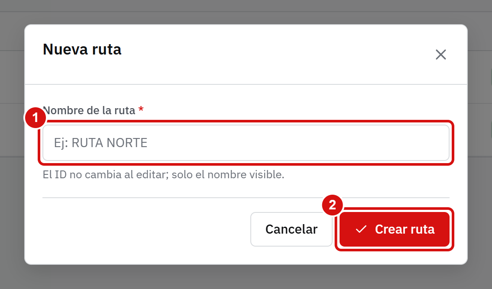
Escribe el nombre de la ruta. El nombre de una ruta puede cambiarse después; su identificador no.
Toca Crear ruta.
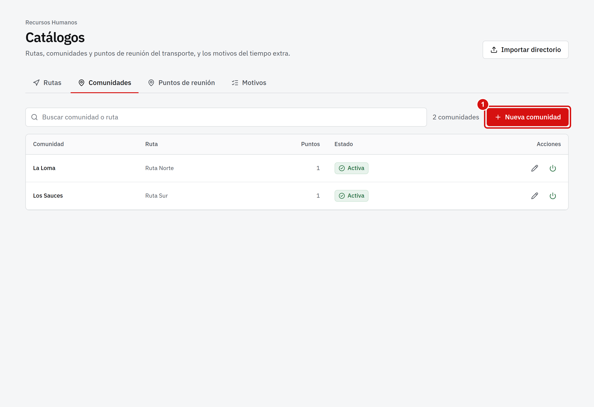
Comunidades: cada una pertenece a una ruta. Nueva comunidad.
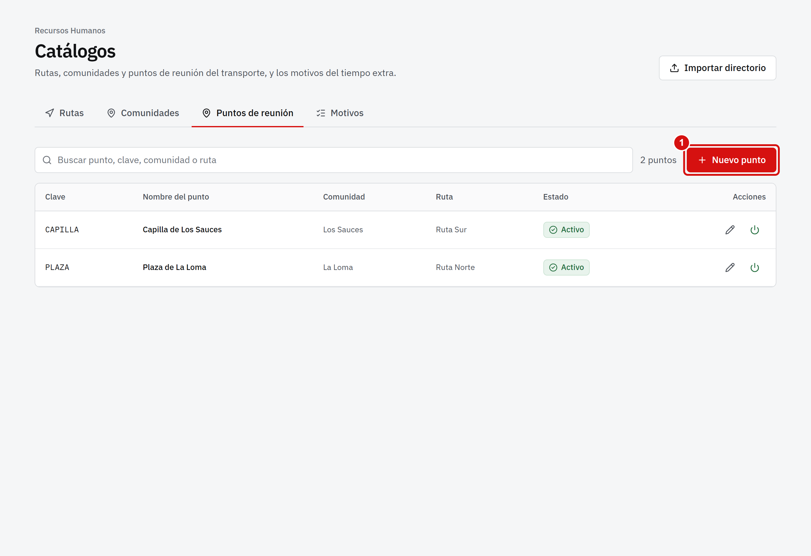
Puntos de reunión: cada uno tiene su clave, nombre, comunidad y ruta. Nuevo punto.
Motivos del tiempo extra
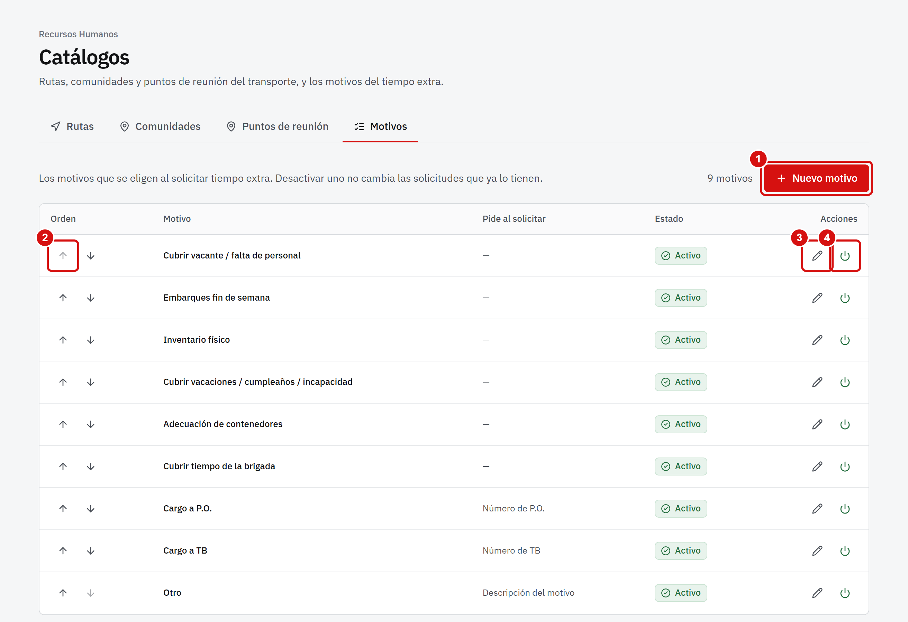
Nuevo motivo.
Las flechas Subir y Bajar cambian el orden en que se ofrecen.
Editar el nombre o lo que pide al solicitar (por ejemplo, número de P.O. o de TB, o un detalle).
Desactivar: ya no se ofrece, pero lo que ya lo tiene no cambia.
Un cambio en los catálogos se ve al momento en toda la planta: avisa antes de desactivar una ruta que se está usando.
16. Reabrir un área que Nóminas ya firmó
Para qué sirve. Cuando Nóminas firma un área de una semana, queda bloqueada. Si hay que corregir algo, solo RH y el administrador pueden reabrirla. Cuándo se usa: de vez en cuando, a pedido de Nóminas o cuando se autoriza algo fuera de tiempo de una semana ya firmada.
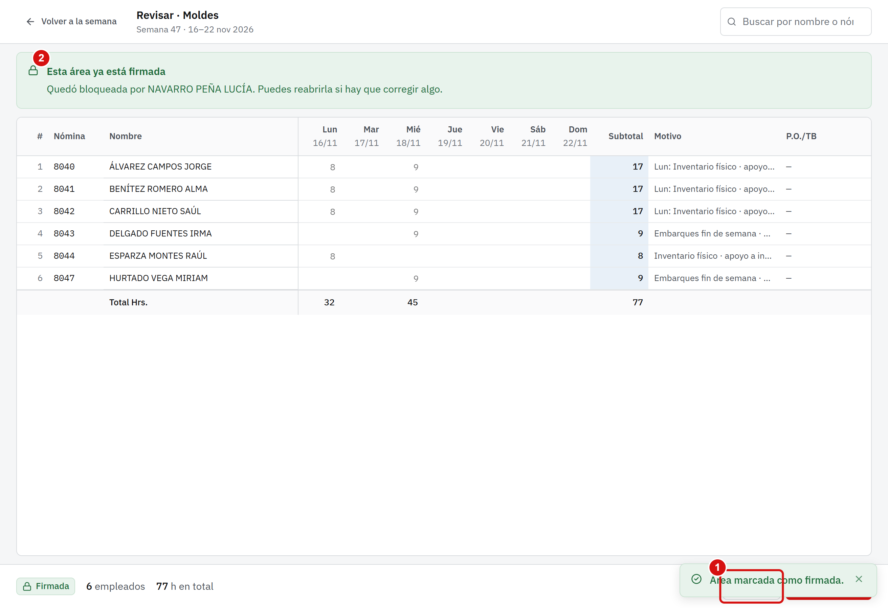
Entra a Formato de tiempo extra, elige la semana y toca Revisar en el área.
Si el área está firmada, arriba dice «Esta área ya está firmada» y aparece Reabrir.
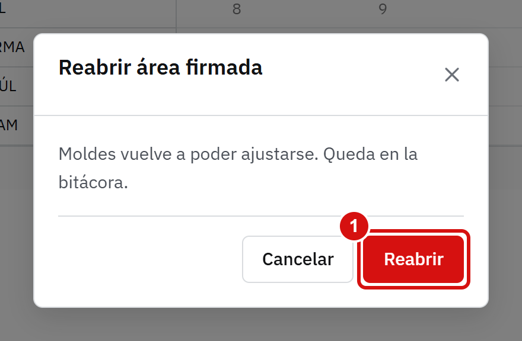
Confirma. El área vuelve a poder ajustarse; queda en la bitácora con tu nombre. Avisa a Nóminas para que corrija y la firme de nuevo.
Reabrir solo desbloquea el área. Los ajustes y los motivos que ya había se conservan.
17. Casos especiales
Confirmé algo por error
Una solicitud Confirmada por RH no regresa a «autorizada». Cancela la solicitud con un motivo desde Todas las solicitudes › Ver. Si su transporte ya se había mandado al proveedor, avísale por tu cuenta: la aplicación no avisa al proveedor. Si todavía se necesita el tiempo extra, quien la pidió crea otra.
El proveedor no recibió a alguien
La app no avisa al proveedor por sí sola: el Formato de rutas lo mandas tú. Revisa en este orden:
¿Estaba confirmado? Busca la solicitud en Todas las solicitudes: debe decir «Confirmada por RH» y en Solicitudes de transporte debe aparecer su solicitud.
¿Llevaba transporte? Abre la solicitud: el empleado debe tener ruta, comunidad y punto. Sin transporte no sale en el Excel.
¿Salió en el día correcto? Baja el Formato de rutas de ese día. Ojo con las salidas que cruzan la medianoche (por ejemplo 4:00 p. m. a 12:00 a. m.): el regreso va al día siguiente.
¿Tiene los datos completos? Revisa su ruta, comunidad, punto de reunión y teléfono en el Padrón (lápiz).
¿Se lo mandaste al proveedor? Si confirmaste después de enviar el archivo, vuelve a bajar el Formato de rutas y mándalo de nuevo.
El Formato de rutas sale vacío
Aún no hay tiempo extra confirmado para esa fecha, o nadie lleva transporte. Confirma en Por enviar al proveedor y vuelve a bajarlo; si pediste «Hoy» y los viajes son de mañana, elige «Mañana».
No encuentro a un empleado
Al crear un usuario: solo salen empleados activos y sin usuario. Si no sale, ya tiene usuario, está inactivo o no está en el padrón (dalo de alta).
Al capturar tiempo extra: solo salen los elegibles del área. En el Padrón, revisa que esté activo, con el puesto de esa área y con Elegible para tiempo extra marcado.
Al importar: la nómina debe venir exacta; revisa la vista previa antes de aplicar.
La semana ya estaba firmada en Nóminas
Reabre el área (sección anterior), pide a Nóminas que corrija y la firme otra vez. Si lo que cambió fue una autorización fuera de tiempo, Nóminas debe agregarlo a mano en el formato.
Se me olvidó copiar la contraseña temporal
No se puede volver a ver. Restablece la contraseña de esa persona y entrega la nueva en persona.
Alguien olvidó su contraseña y está lejos
Solo se restablece en persona, con identificación. Nunca por teléfono ni por mensaje, aunque suene urgente.
Una solicitud no avanza
Mira en Todas las solicitudes en qué nivel está. Si espera al nivel 1 y el área no tiene Autorizador 1, aparece en el Organigrama como «Sin Autorización 1»: asígnalo.
18. Preguntas frecuentes
¿Por qué el Excel del proveedor no trae a todos?Solo trae a quienes llevan transporte y están confirmados. Para todos los empleados con tiempo extra usa Descargar resumen de horas extra.
¿Puedo devolver una solicitud ya confirmada?No. Una confirmada solo se puede cancelar. Devolver es para las autorizadas que aún no confirmas.
¿Qué pasa con las horas si cierro sin transporte?Siguen contando para nómina; solo se omite el transporte.
¿Puedo dar el rol de Autorización 2?No. Solo un administrador. Tú sí das Autorización 1, Solicitante, Recursos Humanos y Nóminas.
Dejé a alguien sin asignación, ¿qué ve?Solo su Inicio y su cuenta. Con el lápiz le das Solicitante o Autorizador 1 del área que le toca.
¿Quién puede ver los teléfonos?Solo Recursos Humanos y Nóminas, en el padrón y en el Formato de rutas. No se guardan en la solicitud.
¿Cómo sé quién cambió algo?Todo queda en la bitácora con nombre y fecha. En el Organigrama, al tocar a una persona, su Historial muestra sus cambios de permisos.
Se cerró mi sesión.Por seguridad se cierra a los 30 minutos sin usar. Entra de nuevo; lo ya hecho no se pierde.
19. Qué significa cada estatus
Así se ve cada estatus del tiempo extra y qué haces tú con él:
Estatus
Qué significa
Qué haces tú
Borrador
Alguien la guardó y todavía no la envía. Solo la ve quien la armó.
Nada. No la ves ni la puedes tocar hasta que la envíe.
En autorización (nivel 1)
Espera la firma del jefe de su área (Autorización 1).
Nada. La ves en Todas las solicitudes; ahí también puedes cancelarla con un motivo.
En autorización (nivel 2)
Ya firmó el jefe de área. Espera la segunda firma.
Puedes firmarla «como RH» en Por autorizar (menos lo que tú creaste) o esperar a Autorización 2.
Devuelta
Alguien pidió que se corrija; regresó a quien la capturó.
Nada. Al reenviarla vuelve a empezar desde el nivel 1.
Autorizada
Tiene las firmas necesarias. Espera tu confirmación.
Está en Por enviar al proveedor: Confirmar, Devolver, Cancelar o, si su fecha ya pasó, Cerrar sin transporte.
Confirmada por RH
La confirmaste: se creó su solicitud de transporte (si había empleados con transporte).
Baja el Formato de rutas del día y mándalo al proveedor. Puedes cancelarla con un motivo desde Todas las solicitudes.
Vencida
Pasó el día del tiempo extra sin terminar de autorizarse.
Nada. Solo Autorización 2 puede autorizarla fuera de tiempo.
Cancelada
Se canceló (con un motivo). Ya no se puede usar.
Nada.
Las solicitudes de transporte que nacen al confirmar se ven en Solicitudes de transporte como Aprobada. Los otros estados que ahí puedes filtrar son Pendiente, Rechazada y Cancelada (esta última, cuando se cancela el tiempo extra de donde nació).